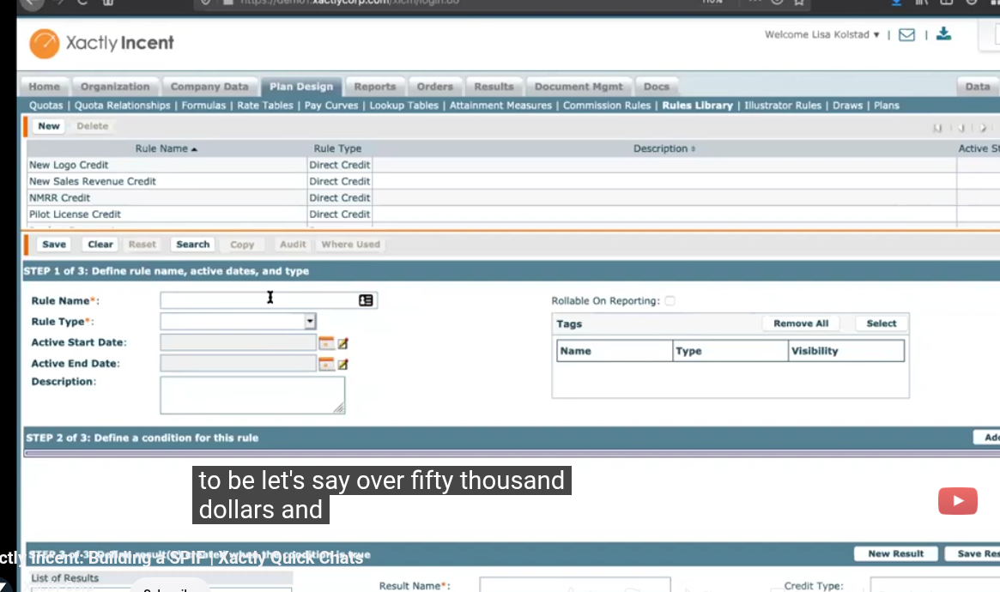
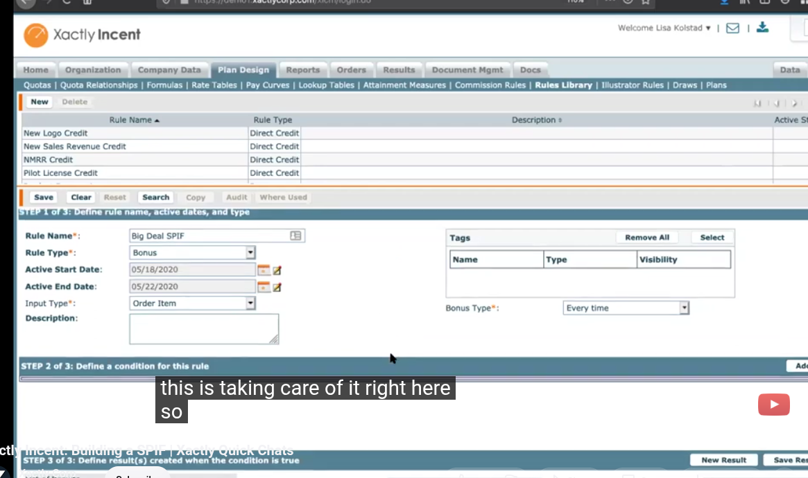
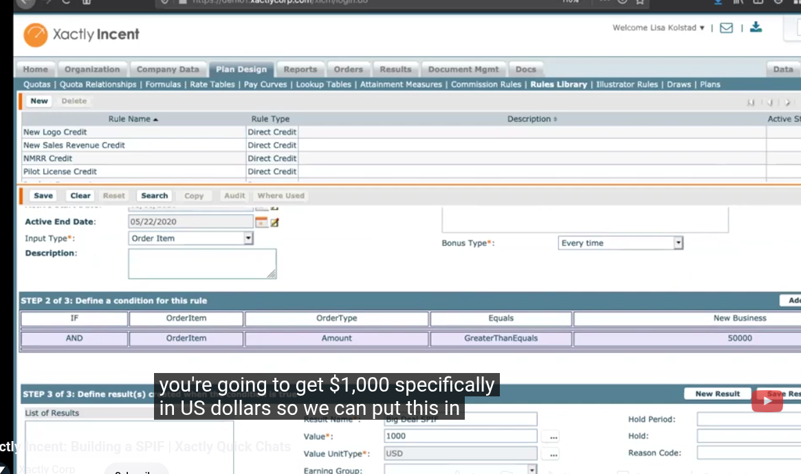
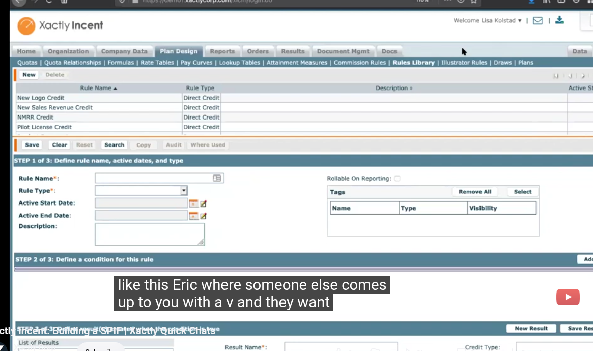
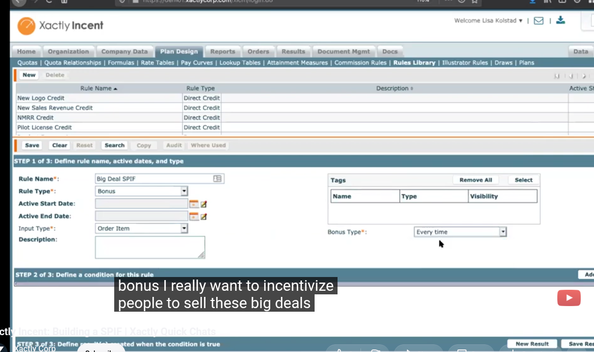
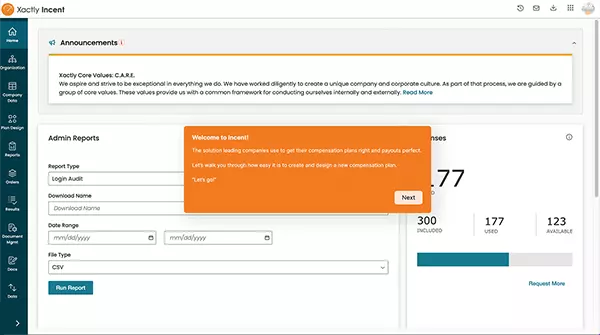
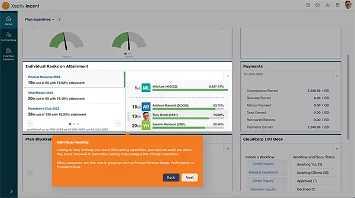
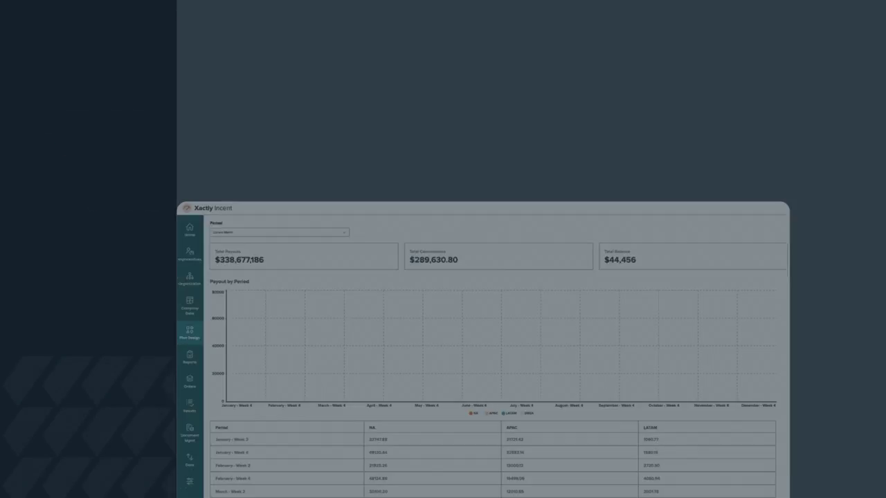

1. Plan Design module — where everything lives

Real UI — Xactly Incent, top nav: Home | Organization | Company Data | Plan Design | Reports | Orders | Results | Document Mgmt | Docs | Data. Plan Design sub-tabs: Quotes | Formulas | Rate Tables | Pay Curves | Lookup Tables | Attainment Measures | Commission Rules | Rules Library | Illustrator Rules | Draws | Plans.The Rules Library lists reusable rules with their Rule Type — e.g. New Logo Credit, New Sales Revenue Credit, NMRR Credit, Pilot License Credit, all Direct Credit type. Rules are shared across plans; the Plans tab binds them to payees.
2. The rule wizard — 3 steps, conditions + results (not free-text formulas)
A rule is built in a wizard. This is how a "SPIF" bonus gets defined, step by step:

STEP 1 of 3: Define rule name, active dates, and type — Rule NameBig Deal SPIF, Rule Type Bonus, Active Start/End Date (05/18/2020–05/22/2020), Input Type Order Item, Bonus Type Every time, Description, Tags, Rollable On Reporting.

STEP 2 of 3: Define a condition — grid:IF OrderItem.OrderType Equals New Business AND OrderItem.Amount GreaterThanEquals 50000. STEP 3 of 3: Define result(s) — Result Name Big Deal SPIF, Value 1000, Value Unit Type USD, plus Hold Period / Hold / Reason Code / Earning Group fields, and New Result / Save Result buttons.
3. The rest of Plan Design (formula surfaces)

Early demo frame — navigating to the Rules Library before the rule is created. Rules list is empty until New.
Rule authoring session mid-demo; the wizard steps build conditions as the consultant talks through target payout.Formulas tab holds named, reusable formulas referenced by rules/rates. Rate Tables hold tiers/rates. Attainment Measures define quota/attainment logic. Commission Rules turn measurements into incentive amounts. Plans assemble components and assign payees — plans don't contain formulas directly; they orchestrate rules and measures that do.
4. End-user + admin surfaces

Admin home: announcements, Admin Reports (Login Audit, download file type CSV), and payout summary tiles.
Rep tour still — attainment/earnings view from Xactly's product tour gallery.
From Xactly's 2026 product video: dashboard with Spiff Commission / Spiff Bonus / Spiff Adjustments tiles, "Payroll by Period" chart, and NA / APAC / LATAM payout table; left nav shows Incent, AlignStar, Analytics, Plan Design, Reporting, Calendar.5. Videos & sources
- Xactly Incent: Building a SPIF | Xactly Quick Chats (3:49, official) — the source of the rule-wizard frames above.
- Xactly Incent Date Formulas Tutorial — formula usage.
- Xactly Incent 2026 product video (direct MP4) · Manage longform MP4
- Product page · Gated tour (email confirm required)